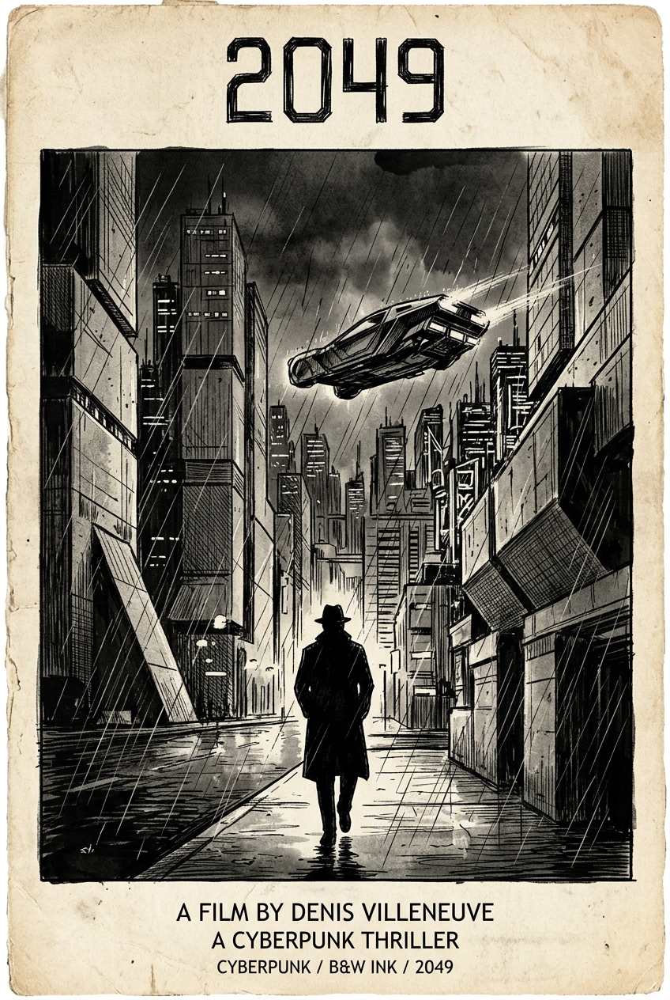
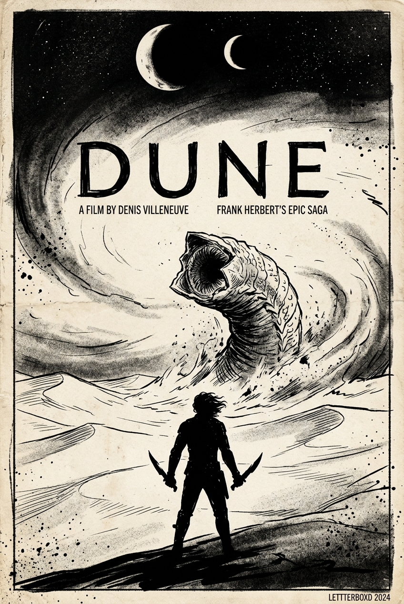
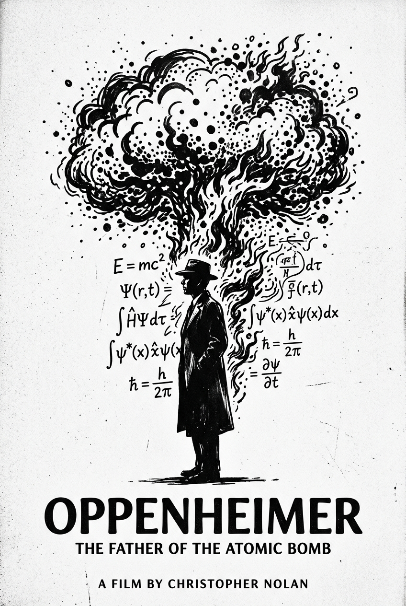
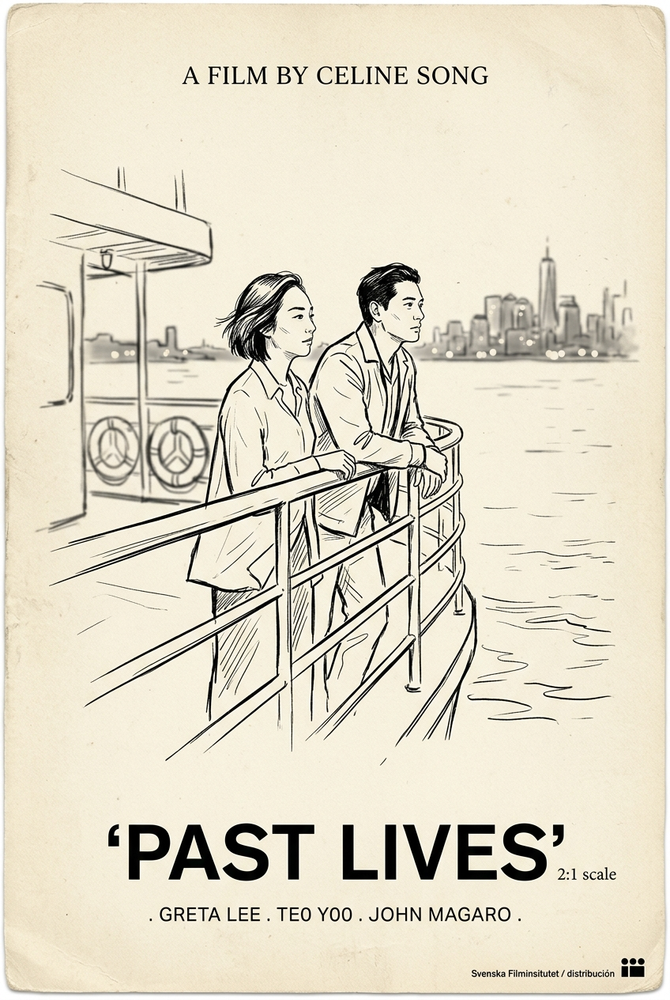
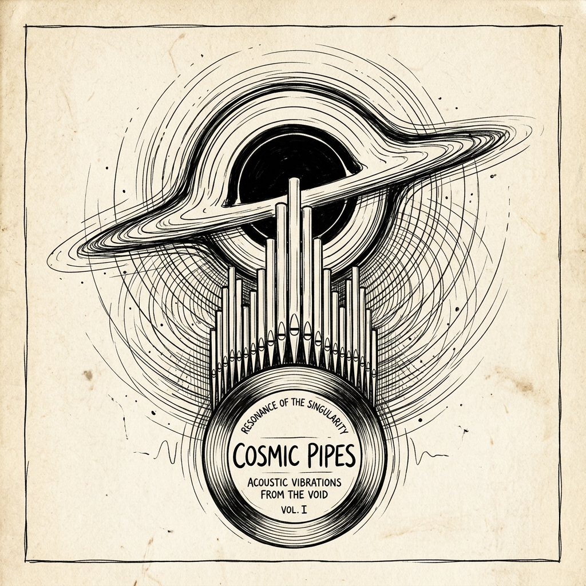
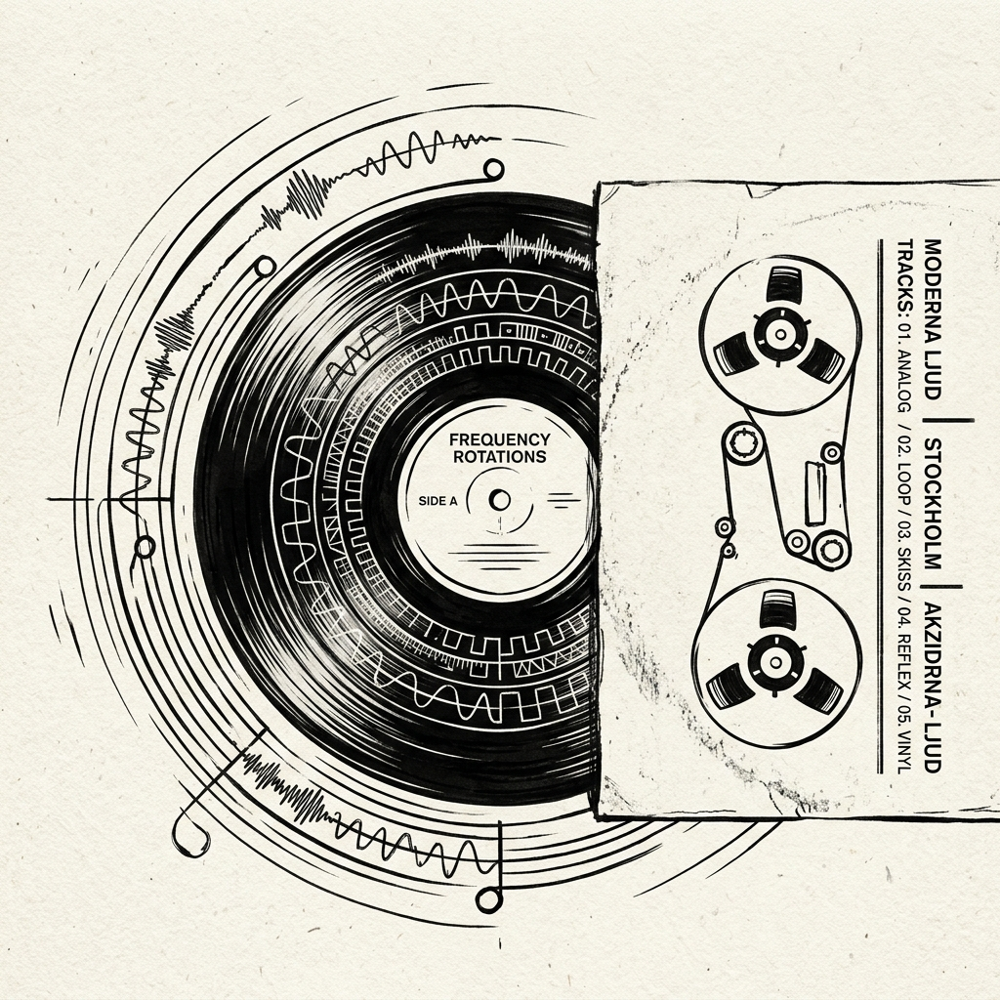

★★★½
2024
2026-09-26
Rebel Ridge
I still don't know why the police needed that money. And there were more cops than people in town.
The Multipotentialite Codex
I believe in intellectual broadness over hyper-specialization. I write essays on leverage and philosophy, dissect cinema as time architecture, collect analogue vinyl frequencies, and architect high-scale software systems.
Hover or click the book to unfold the codex

“I am still looking for a expiration date. " Where do you want to go?" "Wherever you want to take me."”

“I just don't know what to say. It's like the themes of this movie just don't allow you to speak at all. The movie about grief, karma, companionship and love is just to much to take in when made right. We don't even need to speak about nolan, he is as he always is. The scene ab...”

“The adrenaline still hasn't worn down. The third act.... Bravo .... How did they shot that shit.?!!! Anyway way to excited gotta get punched by someone to calm down.”

“How many times will you steal my heart Mr.Hunt ?”
I still don't know why the police needed that money. And there were more cops than people in town.


It was probably back in 2018 when I was introduced to resident evil by RE Biohazard. You can say more or less I loved them. The movie stays fucking true to its origin man, the amount of references which were present was just pure nostalgia. From firstaid spray, to padlocks, t...


I am still looking for a expiration date. " Where do you want to go?" "Wherever you want to take me."


If I was Hilga I too would fall for tiny Bradley Cooper. Kudos to the world building man, some One piece level shit.

Would have helped if people learn to just keep their mouth shut. PS. What a horrible acting from the supporting cast man damn.

It's a great spider-man movie, maybe the best of the modern Spider-Man's movies. The most important aspect of this movie is new york, which is a breathing reality of Peter's life. The web swinging is phenomenal, I mean how's that even possible to shoot it. Not having a certai...
I just don't know what to say. It's like the themes of this movie just don't allow you to speak at all. The movie about grief, karma, companionship and love is just to much to take in when made right. We don't even need to speak about nolan, he is as he always is. The scene ab...


Understood the concept of fifth wheeling from this Movie. PS. Seth Rogan hope your back is good. And Edward Norton I know a few places for getting pegged.






Tape masters, church organs, and dynamic breathing room. Click to view listening logs and Spotify tracks.

By Hans Zimmer (2014)
Time is a resource. A luxury. And every tick of the clock is another day lost.

By Radiohead (2007)
Because we separate like ripples on a blank shore... In rainbows.
Over 6 years of end-to-end product design and design system engineering across fintech, developer tooling, and global digital products.
How redesigning the core token pipeline eliminated 120 recurring handoff bugs and aligned three cross-functional squads.